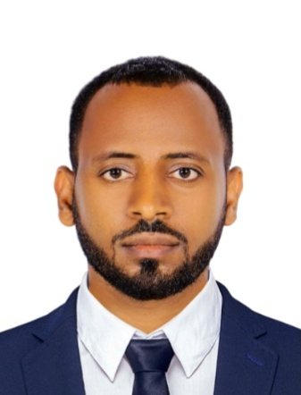

PhD in Computer Engineering
Pusan National University · Busan, Republic of Korea
Department of Information Convergence Engineering · CIS-PNU Lab · GPA 4.04/4.5

ACADEMIC PROFILE
PhD Candidate in Computer Engineering · CIS-PNU Lab
Department of Information Convergence Engineering, Pusan National University · Busan, Republic of Korea
I research privacy-preserving, communication-efficient machine learning for edge and IoT systems, with a focus on federated learning under non-IID data and system heterogeneity. I also work on reinforcement learning, transfer learning, wireless PHY-layer learning, and AI for healthcare, assistive technology, and low-resource languages. Before moving to Korea, I served as a Senior Lecturer and academic leader at Bahir Dar University, Ethiopia.
PROFILE
I am a Computer Engineering PhD candidate at Pusan National University (PNU) in Busan, Republic of Korea, where I have been a doctoral researcher at the Connected Intelligence Systems (CIS-PNU) Lab since September 2023. My work addresses non-IID data, dynamic environments, and device heterogeneity in distributed learning, with applications in healthcare AI, assistive technologies, and OCR for low-resource languages.
I completed my BSc and MSc at Bahir Dar University (BDU), Ethiopia, graduating with distinction, and joined the Faculty of Computing at the Bahir Dar Institute of Technology as a lecturer in 2017. At BDU I served as Freshman Academic Program Coordinator, Vice Dean (Academic Program Officer), and Acting Dean. My doctoral studies are supported by the Brain Korea 21 (BK21) programme and the Samil Cultural Foundation, among others.
Beyond research, I am an Earth Charter Young Leader and active in sustainability, interfaith and diversity-in-AI communities. Many people call me “Tesfish”.
Inspire. Educate. Lead. For a Sustainable Tomorrow.
“ትልቅ ነገር ተመኝ፣ ቀና ሁን፣ ይሳካልሃል!” (“Aspire to greatness, keep up goodwill, and you will succeed.”)
SCHOLARLY FOCUS
A comprehensive review, led with Prof. Taewoon Kim, that treats NLP, federated learning, and reinforcement learning as three interdependent pillars. It proposes a six-dimensional taxonomy, quantifies privacy, communication, and accuracy trade-offs, and discusses LoRA-based federated fine-tuning, RLHF, hallucination, and deployment on edge and robotic systems.
A comprehensive survey of machine learning, deep learning, and foundation models at the physical layer, covering channel estimation, constellation design, signal detection, modulation optimization, and MIMO detection, with a discussion of accuracy, complexity, and generalization trade-offs.
A federated learning framework for IoT-edge environments that jointly addresses model transfer and dynamic parameter-server selection under non-IID data.
ACADEMIC TRAINING
Pusan National University · Busan, Republic of Korea
Department of Information Convergence Engineering · CIS-PNU Lab · GPA 4.04/4.5
Bahir Dar University · Ethiopia
GPA 3.82/4.00 · First class with great distinction
Bahir Dar University · Ethiopia
Professional teaching licence for Ethiopian university educators
Bahir Dar University · Ethiopia
GPA 3.60/4.00 · First class with distinction
PROFESSIONAL PATH
Pusan National University community
Leads strategic planning and alumni engagement, coordinates events and professional networking, strengthens ties between alumni, the university and external partners, and drives outreach and membership growth.
Pusan National University community
Supported strategic planning and alumni engagement, coordinated events and professional networking, and helped lead outreach and membership growth.
Pusan National University · Busan, Republic of Korea
Connected Intelligence Systems (CIS-PNU) Lab · Pusan National University
Federated learning, edge AI, reinforcement learning, and wireless-system learning.
Bahir Dar Institute of Technology, Bahir Dar University · Ethiopia
Bahir Dar Institute of Technology, Bahir Dar University · Ethiopia
Bahir Dar Institute of Technology, Bahir Dar University · Ethiopia
Faculty of Computing, Bahir Dar Institute of Technology, Bahir Dar University · Ethiopia
Joined in July 2017.
SCHOLARLY WORK
Loading publications…
All publications on Google Scholar ↗Scilit profile ↗ORCID record ↗
RECOGNITION
More detail: my scholarship story on Global Scholarships ↗
COMMUNITY
IN THE NEWS
GET IN TOUCH
For academic correspondence, research collaboration, or speaking invitations, please contact me by email.
Email: tesfahunegn9@gmail.com
Institutional email: tesfahunegn9@pusan.ac.kr
Affiliation: CIS-PNU Lab, Department of Information Convergence Engineering, Pusan National University
Address: 2, Busandaehak-ro 63beon-gil, Geumjeong-gu, Busan 46241, Republic of Korea